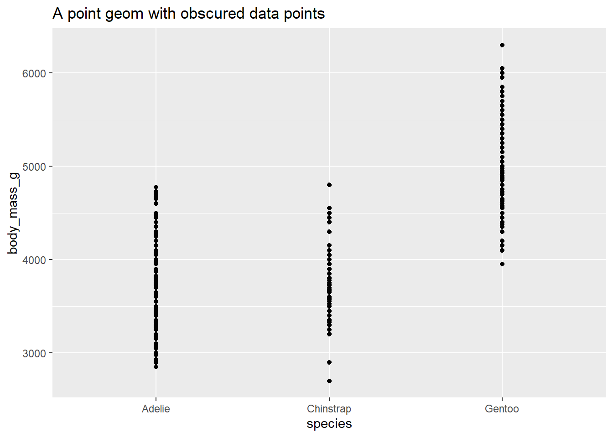
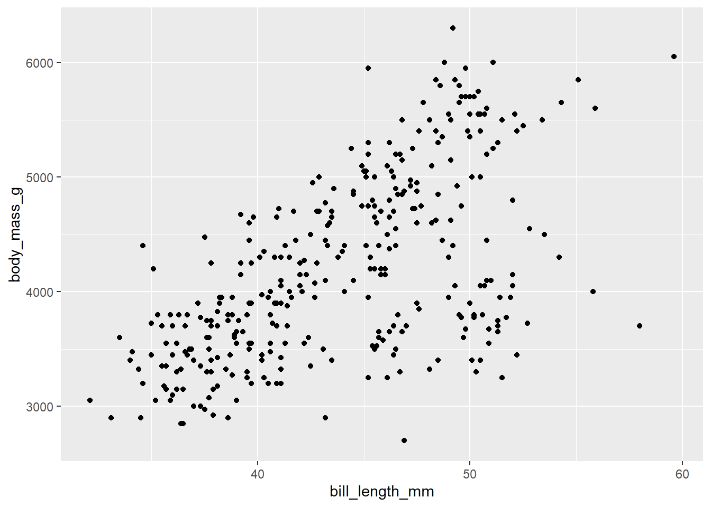

The Grammar of Graphics- V2.0
Arvind Venkatadri
02 Feb 2021
This RMarkdown document is derived from A Layered Grammar of Graphics by Hadley Wickham, which is on the Files folder.
I strongly encourage you to glance through the original article, when you work more with this document.
Esp. IAIDP,VCSB and HCD people. Oh, and FILM people.

Components of the layered grammar of graphics
Layer
Layers are used to create the objects on a plot. They are defined by five basic parts:
- Data ( What dataset/spreadsheet am I using?)
- Mapping ( What does each column do in my graph?)
- Statistical transformation (stat) (Do I have calculate something first?)
- Geometric object (geom) ( What shape, colour, size..do I want?)
- Position adjustment (position) ( Where do I want it on the graph?)
Tidy Data

Tidy data
Kids of Variables
Kinds of Variable are defined by the kind of questions they answer to:
- What/Who/Where? -> Some kind of Name or Category (Remember Lars Gustaffson)
- What Kind? How? -> Some kind “Type”
- How Many? How large? -> Some kind of Quantity
Data and mapping
We will use “real world” data. Let’s use the penguins dataset in the palmerpenguins package.1
head(penguins, n = 3)## # A tibble: 3 x 8
## species island bill_length_mm bill_depth_mm flipper_length_… body_mass_g sex
## <fct> <fct> <dbl> <dbl> <int> <int> <fct>
## 1 Adelie Torge… 39.1 18.7 181 3750 male
## 2 Adelie Torge… 39.5 17.4 186 3800 fema…
## 3 Adelie Torge… 40.3 18 195 3250 fema…
## # … with 1 more variable: year <int>tail(penguins)## # A tibble: 6 x 8
## species island bill_length_mm bill_depth_mm flipper_length_… body_mass_g sex
## <fct> <fct> <dbl> <dbl> <int> <int> <fct>
## 1 Chinst… Dream 45.7 17 195 3650 fema…
## 2 Chinst… Dream 55.8 19.8 207 4000 male
## 3 Chinst… Dream 43.5 18.1 202 3400 fema…
## 4 Chinst… Dream 49.6 18.2 193 3775 male
## 5 Chinst… Dream 50.8 19 210 4100 male
## 6 Chinst… Dream 50.2 18.7 198 3775 fema…
## # … with 1 more variable: year <int>dim(penguins)## [1] 344 8?penguinsAesthetic Mapping defines how the variables are applied to the plot. So if we were graphing information from penguins, we might map a penguin’s flipper_length_mm to the \(x\) position and body_mass_g to the \(y\) position. We can map variables metaphorically to other things: shape, colour, size, alpha(how dark?)….
For our running example,
penguins %>%
select(bill_length_mm,body_mass_g) %>%
rename(x = bill_length_mm,
y = body_mass_g)## # A tibble: 344 x 2
## x y
## <dbl> <int>
## 1 39.1 3750
## 2 39.5 3800
## 3 40.3 3250
## 4 NA NA
## 5 36.7 3450
## 6 39.3 3650
## 7 38.9 3625
## 8 39.2 4675
## 9 34.1 3475
## 10 42 4250
## # … with 334 more rowspenguins %>%
ggplot(mapping = aes(x = bill_length_mm, y = body_mass_g)) +
geom_point() +
geom_smooth(method = "lm", se = TRUE)## `geom_smooth()` using formula 'y ~ x'## Warning: Removed 2 rows containing non-finite values (stat_smooth).## Warning: Removed 2 rows containing missing values (geom_point).
Statistical transformation
A statistical transformation (stat) transforms the data, generally by summarizing the information. For instance, in a bar graph you might summarize the data by graphing the total number of observations within a set of categories.
A stat is a function that takes in a dataset as the input and returns a dataset as the output; a stat can add new variables to the original dataset, or create an entirely new dataset. So instead of graphing this data in its raw form:
penguins %>%
select(island)## # A tibble: 344 x 1
## island
## <fct>
## 1 Torgersen
## 2 Torgersen
## 3 Torgersen
## 4 Torgersen
## 5 Torgersen
## 6 Torgersen
## 7 Torgersen
## 8 Torgersen
## 9 Torgersen
## 10 Torgersen
## # … with 334 more rowsYou would transform it to:
penguins %>%
count(island)## # A tibble: 3 x 2
## island n
## <fct> <int>
## 1 Biscoe 168
## 2 Dream 124
## 3 Torgersen 52Sometimes you don’t need to make a statistical transformation. For example, in a scatterplot you use the raw values for the \(x\) and \(y\) variables to map onto the graph. In these situations, the statistical transformation is an identity transformation - the stat simply passes in the original dataset and exports the exact same dataset.
Geometric objects
Geometric objects (geoms) control the type of plot you create. Geoms are classified by their dimensionality:
- 0 dimensions - point, text
- 1 dimension - path, line
- 2 dimensions - polygon, interval
Each geom can only display certain aesthetics or visual attributes of the geom. For example, a point geom has position, color, shape, and size aesthetics.
ggplot(data = penguins,
mapping = aes(x = bill_length_mm, # x-position => bill_length_mm
y = body_mass_g, # y-position => body_mass_g
color = island)) + # color => Island as Metaphor
geom_point() +
ggtitle("A point geom with position and color aesthetics")## Warning: Removed 2 rows containing missing values (geom_point).
ggplot(data = penguins,
mapping = aes(x = bill_length_mm,
y = body_mass_g,
color = species,
shape = island)) +
geom_point() +
ggtitle("A point geom with position and color and shape aesthetics")## Warning: Removed 2 rows containing missing values (geom_point).
- Position defines where each point is drawn on the plot
- Color defines the color of each point. Here the color is determined by the class of the car (observation)
Whereas a bar geom has position, height, width, and fill color.
ggplot(data = penguins,
aes(x = species)) + # x position => ?
# No need to type "mapping"...
geom_bar() + # Where does the height come from?
ggtitle("A bar geom with position and height aesthetics")
ggplot(data = penguins, aes(x = species)) +
geom_bar() +
ggtitle("A bar geom with position and height aesthetics")
- Position determines the starting location (origin) of each bar
- Height determines how tall to draw the bar. Here the height is based on the number of observations in the dataset for each possible number of cylinders.
Position adjustment
Sometimes with dense data we need to adjust the position of elements on the plot, otherwise data points might obscure one another. Bar plots frequently stack or dodge the bars to avoid overlap:
count(x = penguins, species, island) %>%
ggplot(mapping = aes(x = species, y = n, fill = island)) +
geom_bar(stat = "identity") +
ggtitle(label = "A stacked bar chart")
count(x = penguins, species, island) %>%
ggplot(mapping = aes(x = species, y = n, fill = island)) +
geom_bar(stat = "identity", position = "dodge") +
ggtitle(label = "A dodged bar chart")
penguins %>%
ggplot(mapping = aes(x = species, fill = island)) +
geom_bar() +
ggtitle(label = "A stacked bar chart")
penguins %>%
ggplot(mapping = aes(x = species, fill = island)) +
geom_bar(position = "dodge") +
ggtitle(label = "A dodged bar chart")
Sometimes scatterplots with few unique \(x\) and \(y\) values are jittered (random noise is added) to reduce overplotting.
ggplot(data = penguins,
mapping = aes(x = species,
y = body_mass_g)) +
geom_point() +
ggtitle("A point geom with obscured data points")## Warning: Removed 2 rows containing missing values (geom_point).
ggplot(data = penguins,
mapping = aes(x = species,
y = body_mass_g)) +
geom_jitter() +
ggtitle("A point geom with jittered data points")## Warning: Removed 2 rows containing missing values (geom_point).
Scale
A scale controls how data is mapped to aesthetic attributes, so we need one scale for every aesthetic property employed in a layer. For example, this graph defines a scale for color:
ggplot(data = penguins,
mapping = aes(x = bill_depth_mm,
y = bill_length_mm,
color = species)) +
geom_point() ## Warning: Removed 2 rows containing missing values (geom_point).
Note that the scale is consistent - every point for a compact car is drawn in tan, whereas SUVs are drawn in pink. The scale can be changed to use a different color palette:
ggplot(data = penguins,
mapping = aes(x = bill_length_mm,
y = body_mass_g,
color = species)) +
geom_point() +
scale_color_brewer(palette = "Dark2")## Warning: Removed 2 rows containing missing values (geom_point).
Now we are using a different palette, but the scale is still consistent: all Adelie penguins utilize the same color, whereas Chinstrap use a new color but each Adelie still uses the same, consistent color.
Coordinate system
A coordinate system (coord) maps the position of objects onto the plane of the plot, and controls how the axes and grid lines are drawn. Plots typically use two coordinates (\(x, y\)), but could use any number of coordinates. Most plots are drawn using the Cartesian coordinate system:
x1 <- c(1, 10)
y1 <- c(1, 5)
p <- qplot(x = x1, y = y1, geom = "point", xlab = NULL, ylab = NULL) +
theme_bw()
p +
ggtitle(label = "Cartesian coordinate system")ggplot(penguins, aes(flipper_length_mm, body_mass_g)) +
geom_point() +
coord_polar()## Warning: Removed 2 rows containing missing values (geom_point).This system requires a fixed and equal spacing between values on the axes. That is, the graph draws the same distance between 1 and 2 as it does between 5 and 6. The graph could be drawn using a semi-log coordinate system which logarithmically compresses the distance on an axis:
p +
coord_trans(y = "log10") +
ggtitle(label = "Semi-log coordinate system")
Or could even be drawn using polar coordinates:
p +
coord_polar() +
ggtitle(label = "Polar coordinate system")
Faceting
Faceting can be used to split the data up into subsets of the entire dataset. This is a powerful tool when investigating whether patterns are the same or different across conditions, and allows the subsets to be visualized on the same plot (known as conditioned or trellis plots). The faceting specification describes which variables should be used to split up the data, and how they should be arranged.
ggplot(data = penguins,
mapping = aes(x = bill_length_mm,
y = body_mass_g)) +
geom_point() +
facet_wrap(~ species)## Warning: Removed 2 rows containing missing values (geom_point).
ggplot(data = penguins, mapping = aes(x = bill_length_mm, y = body_mass_g, color = sex)) +
geom_point() +
facet_grid(species~island)## Warning: Removed 2 rows containing missing values (geom_point).# Ria's explanation: This code did not work becasue....Defaults
Rather than explicitly declaring each component of a layered graphic (which will use more code and introduces opportunities for errors), we can establish intelligent defaults for specific geoms and scales. For instance, whenever we want to use a bar geom, we can default to using a stat that counts the number of observations in each group of our variable in the \(x\) position.
Consider the following scenario: you wish to generate a scatterplot visualizing the relationship between penguins’ bill_length and their body_mass. With no defaults, the code to generate this graph is:
ggplot() +
layer(
data = penguins,
mapping = aes(x = bill_length_mm,
y = body_mass_g),
geom = "point",
stat = "identity",
position = "identity"
) +
scale_x_continuous() +
scale_y_continuous() +
coord_cartesian()## Warning: Removed 2 rows containing missing values (geom_point).
The above code:
Creates a new plot object (
ggplot)Adds a layer (
layer)- Specifies the data (
penguins) - Maps engine bill length to the \(x\) position and body mass to the \(y\) position (
mapping) - Uses the point geometric transformation (
geom = "point") - Implements an identity transformation and position (
stat = "identity"andposition = "identity")
- Specifies the data (
Establishes two continuous position scales (
scale_x_continuousandscale_y_continuous)Declares a cartesian coordinate system (
coord_cartesian)
How can we simplify this using intelligent defaults?
We only need to specify one geom and stat, since each geom has a default stat.
Cartesian coordinate systems are most commonly used, so it should be the default.
Default scales can be added based on the aesthetic and type of variables.
- Continuous values are transformed with a linear scaling.
- Discrete values are mapped to integers.
- Scales for aesthetics such as color, fill, and size can also be intelligently defaulted.
Using these defaults, we can rewrite the above code as:
ggplot() +
geom_point(data = penguins,
mapping = aes(x = bill_length_mm,
y = body_mass_g))## Warning: Removed 2 rows containing missing values (geom_point).
This generates the exact same plot, but uses fewer lines of code. Because multiple layers can use the same components (data, mapping, etc.), we can also specify that information in the ggplot() function rather than in the layer() function:
ggplot(data = penguins,
mapping = aes(x = bill_length_mm,
y = body_mass_g)) +
geom_point()## Warning: Removed 2 rows containing missing values (geom_point).
And as we will learn, function arguments in R use specific ordering, so we can omit the explicit call to data and mapping:
ggplot(penguins, aes(bill_length_mm, body_mass_g)) +
geom_point()## Warning: Removed 2 rows containing missing values (geom_point).
Run
?penguinsin the console to get more information about this dataset.↩︎